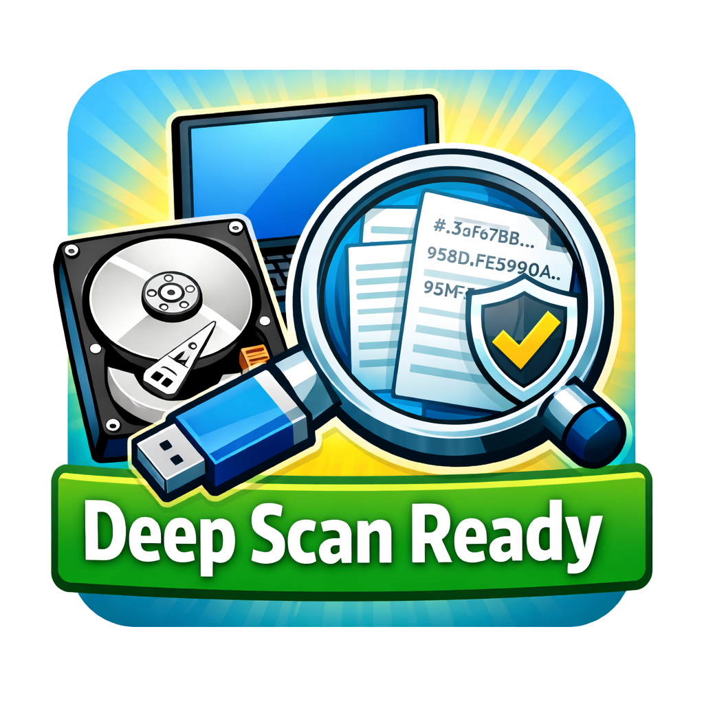
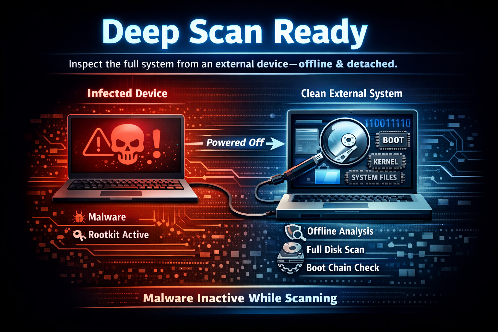
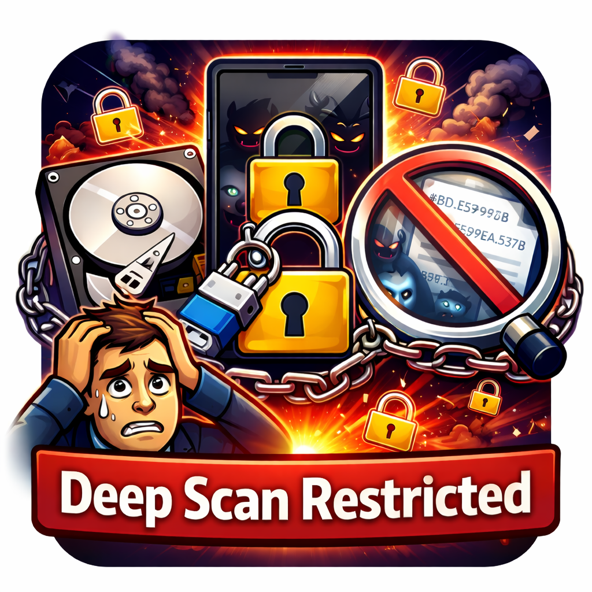
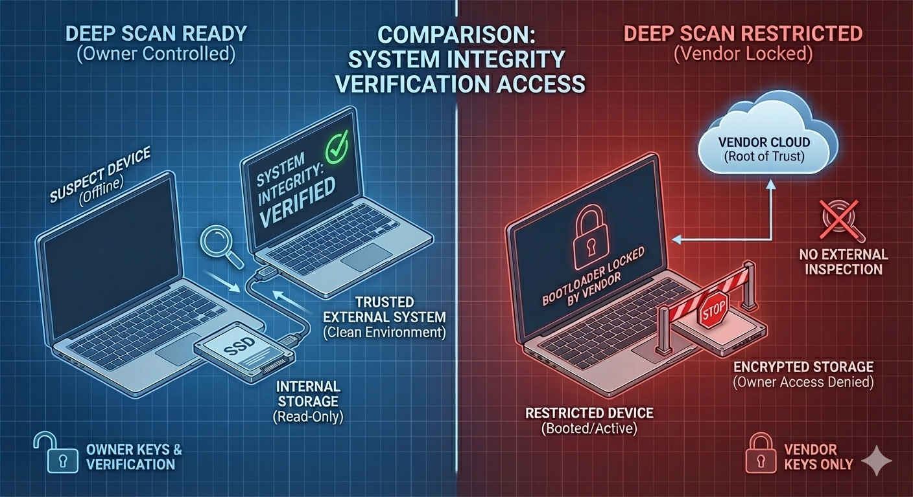

We believe security software like Kicksecure needs to remain Open Source and independent. Would you help sustain and grow the project? Learn more about our 11 year success story and maybe DONATE!


Deep scan ready means the owner can safely look at everything while the device is off, and if necessary, watch what happens when it starts.
ELI5: What does "Deep Scan Ready" mean?
Bear with us, this section is ELI5. More technical explanations follow later.
Imagine your computer is a locked box.
There are two kinds of boxes.
Box type A
You keep the keys. You can turn the box off and safely look at everything inside. If needed, you can also choose to place your own trusted camera inside the box before anything else starts. Nothing inside can run, hide, or secretly come back without being seen.
This is Deep Scan Ready.
Box type B
The company that made the box keeps the keys. You are told to trust their checker. You cannot look inside first, and you cannot place your own monitoring tools inside. If something bad can fool their checker, you may never know.
This is Deep Scan Restricted.
Introduction
More technically: Deep scan ready means the device owner can inspect the full operating system and boot chain from a clean external system while the device is powered off, and, when needed, observe what happens during system startup instead of trusting the running system blindly.
In some system designs, security relies on trusting the platform vendor (the company that makes the device, firmware, or operating system). In other designs, the operating system itself is included in the threat model and treated as potentially compromised.
In the deep scan ready model, users control verification keys (cryptographic keys used for verification), verification, and modification, meaning the ability to inspect and change the system. This includes both inspection of stored data and, when required, owner-authorized modification or instrumentation of early boot components for investigation purposes.
An important rule for deep virus scans is: do not boot a device suspected of being infected with malware, because active malware can hide itself, fake "clean" results, erase evidence. [1] Instead, power the device off and inspect the storage from a clean external system by performing a read only inspection (so the suspect device cannot write changes back while you are checking it). This approach is well suited for detecting persistent malware. To learn more, see Basics of Malware Analysis and Backdoor Hunting.
Some malware is designed to leave little or no persistent trace on disk and instead reappear when the system starts. In cases of non-persistent malware that reinfects the system, a deeper investigation may require observing the boot process itself.
Deep scans are usually possible with traditional Linux distributions but often not on most mobile devices such as stock Android, because you generally cannot easily boot a trusted external system or take control of early system startup.
What does deep scan ready mean?
Deep scan ready means you can safely and fully inspect a device for malware from outside, while it is powered off, and, if needed, temporarily take control of the earliest execution layers to observe what happens across boots.
- Analyze everything: All files on the disk without exception. The file system must be inspectable, meaning the owner can independently check it, including a thorough integrity check of the system boot chain.
- Not only apps: Deep scan ready means you can inspect the whole system, not just installed applications.
- Include boot components: The scan includes the partition table (how the disk is divided), bootloader (the first program that starts the system), kernel (the core part of the OS), init (initial startup process), system files, etc.
These two capabilities match two common classes of malware behavior:
- Persistent compromise: Malware or unauthorized modifications that remain present across reboots. Offline inspection and checksum comparison are well suited for detecting persistent changes.
- Non-persistent reinfection: Malware that is designed to exist only temporarily, erase itself, or reinfect after each boot. This is called non-persistent malware. Offline inspection can look clean in this case, because there may be little or nothing persistent left to find. Detecting this often requires observing the boot process itself.
Deep scan ready requires two related capabilities. Both are about what the owner can do with their own device, without asking the vendor for permission.
- Passive, offline inspection: This is what most people think
of as an "offline scan". The owner checks the device while it is powered
off, from a clean external system, so malware stays inactive.
- Forensic readiness: This is sometimes called forensic readiness for the device owner.
- Keep malware inactive while scanning: Malware must not be
active in memory during the scan. This requires:
- Offline deep scan: Or at minimum an Offline Integrity Check; a different boot medium must be used, such as booting from USB (Live USB Checkup).
- Detached deep scan: Even better, remove the disk and scan it from a different, clean system, on a different computer.
- Owner-authorized active instrumentation of the boot process:
Some threats are not primarily about what is stored on disk, but about
what happens during boot. Deep scan ready also means the owner can, if
needed, temporarily instrument early boot components (bootloader,
kernel, init, early startup) to observe what happens when the system
starts.
- Investigative readiness: This is sometimes called investigative readiness.
- Synonyms: Instrumented Deep Scan, Boot-Time Instrumentation, or Owner-Controlled Early Boot Monitoring.
- Early execution: Trusted monitoring code can run before potential malware.
Support both tools and experts: The system can be inspected and analyzed in various ways.
- Automated checksum verification tools: Important system files can be compared by their cryptographic checksums (hash sums) with known clean versions. This is being elaborated in chapter Deep Scan Tools.
- Manual analysis by malware analysts: A human expert can inspect suspicious changes, unusual files, and unexpected startup components, including analyzing system state across reboots when needed.
- Boot-time and behavioral investigation tools: Owner-authorized instrumentation can be used to observe early startup behavior and system actions over time, which is useful for investigating non-persistent malware.
- Automated by virus scanners: While The Utility of Antivirus Tools is debatable, it may also be an option. Antivirus is not required. Use of antivirus is fully optional.
What is the difference of a deep scan versus a normal antivirus scan?
- Normal antivirus scan: Users typically do an antivirus scan after booting the system that is suspected of being infected with malware. This kind of scan runs inside the system you do not trust, so malware may be able to hide, interfere, or show false results.
- Deep scan: A deep scan aims to inspect the full storage and boot components from outside the suspect system, so malware is not running while you scan. If necessary, a deep scan can also involve observing what happens when the system starts, to detect malware that only appears during boot or reinfects after each restart.
Why should I care about computer viruses?
Malware can secretly spy on you (screenshots, files, keystrokes, webcam/mic) and steal or destroy data, including by encrypting your drive for ransom. It can also plant fake evidence and turn your computer into a "zombie" used for crimes (spam, DDoS, hosting illicit / illegal material). Worst of all, some malware can install persistent backdoors (including hardware level) that can survive a full operating system reinstall, and if the host is compromised, every virtual machine (VM) is compromised too. See also The Importance of a Malware Free System.
Deep Scan Ready vs Restricted Devices
Which operating systems are typically deep scan ready? Most, if not all, traditional Linux distributions are deep scan ready. You can boot a clean system and inspect everything, even if the installed OS is compromised. Alternative terminology would be forensic readiness for the device owner.
Which operating systems are typically not deep scan ready? For example, stock Android. This is being elaborated on the Android Insecurity wiki page.
Technical Implementation
How can an operating system implement being deep scan ready? There is usually no special "deep scan feature" to add. Deep scan readiness is mostly about not blocking the owner from inspecting the device from the outside.
In practice, this means the owner must be able to boot a known clean external system (for example from USB) and read the storage for inspection, without having to trust the installed OS.
Some designs prevent this, for example a locked bootloader (the first startup program) that refuses to boot anything except vendor-approved software. This is also known as restricted boot. Instead, owner-approved software should be permissible to boot such as for example with Sovereign Boot.
Threat Model Differences
This section explains a fundamental difference in how devices can be designed: who ultimately controls the device, and who must be trusted.
At a high level, it is about owner capability vs platform restriction. In other words: whether the device primarily serves the owner, or whether the owner must rely on the platform vendor for permission, visibility, and verification.
In security terms, these approaches are called different trust models. A trust model describes who holds power, who can verify what is happening, and who must be trusted without being able to independently check.
Two contrasting trust models are described below.
- Vendor rooted trust: Vendor lockdown and vendor lock in.
- In this model, the platform decides what is allowed, and the vendor controls the root of trust, for example which cryptographic keys are accepted and which software is permitted to run.
- This means that the user mainly receives protection against third party attackers, but must inherently trust the vendor. If the vendor makes a mistake, is compromised, pressured, or behaves maliciously, the user has limited ability to independently detect or override that behavior.
- User verifiable trust: Trust minimization through independent
verification.
- In this model, the platform itself may be included in the threat model. This means the system is not automatically trusted simply because it is running.
- Because of this assumption, the design focuses on giving the device owner ways to check, verify, and if necessary replace the platform from outside, without trusting it while it is being inspected.
This leads to several important properties:
- Vendor accountability: The vendor cannot quietly, knowingly or unknowingly, ship different software or updates to different people. Targeted malicious upgrades become detectable rather than invisible.
- Independent auditability: The system is designed so that third parties can inspect and analyze it. Trust does not rely solely on the vendor's claims.
- Vendor independent verification: The owner can verify the system without having to trust the provider. Verification does not require permission from the vendor.
- Full Device Backup Access: The device owner has the ability to make a complete system backup, rather than being restricted to partial or vendor approved data access.
- Verified Boot: This trust model is compatible with owner controlled Verified Boot (User Settable Root of Trust), where the owner decides which software keys are trusted. A sample implementation work in progress is Sovereign Boot.
- Tamper Evident Boot: A related concept is Tamper Evident Boot, where unauthorized modifications can be detected not only by the vendor, but also by the device owner themselves.
- Owner-authorized boot control:: In a user verifiable trust model, verification extends beyond static inspection. Offline inspection detects persistent state. However, some malware is designed to exist only temporarily, reinfecting the system after each boot or erasing itself when inspection is attempted. Offline scans alone are insufficient in these cases. Deep scan ready systems therefore allow the owner, when necessary, to extend "verify and replace" to "observe and trap". This is achieved by owner-controlled early execution that runs before potential malware and observes system behavior across boots. This does not mean every user must deploy such mechanisms. It means the platform does not forbid them.
The central distinction is not about convenience, but about control. In one model, trust flows from the vendor to the user. In the other, trust can be independently established by the owner.
Computer users must not be required to seek external authorization to exercise their freedoms.Free Software Foundation: Will your computer's "Secure Boot" turn out to be "Restricted Boot"?
This quote highlights the concern that a system which requires external approval to function places inherent limits on the user's autonomy.
"Treacherous computing" is a more appropriate name, because the plan is designed to make sure your computer will systematically disobey you. In fact, it is designed to stop your computer from functioning as a general-purpose computer. Every operation may require explicit permission.The GNU Project: Can You Trust Your Computer?
This perspective reflects a long standing critique of systems where control is shifted away from the owner and into external entities.
Similar concepts exist in practice. For example:
- Kali Linux provides a Forensic Mode, which is designed around the idea that a system should be inspectable without trusting the environment being inspected. This illustrates the broader principle of user verifiable trust.
Advantages of Deep Scan Readiness
Deep scan readiness discourages targeted malicious upgrades, because it is harder to hide changes when owners can verify the full system from outside.
Deep Scan Tools
Deep scan readiness is not the same thing as actually running a deep scan.
Deep scan readiness means that the system is designed in a way that allows thorough inspection when needed. Performing a deep scan is a separate action that can be done later, using appropriate tools.
Deep scanning itself is unspecific to Kicksecure. In practice, this means that the same methods and tools a security expert would use to deeply inspect any other Linux distribution, such as Debian, can also be used to deep scan Kicksecure.
There are instructions on how to Boot from External Drive. Booting from a clean external system allows inspection of the internal system without relying on the potentially compromised operating system itself. In the future, more documentation and tools are planned to make deep scanning easier and more user friendly, so that it becomes accessible to a wider range of users.
One common deep scan method is checksum comparison. A checksum is a mathematical fingerprint of a file. If even a single bit of a file changes, its checksum changes as well.
The basic process works as follows:
1. Boot the device from a clean and trusted external system.
2. Calculate checksums of important components such as the bootloader, kernel, and core system files. These parts are critical because they control how the system starts and operates.
3. Compare the calculated checksums with known clean data. If differences are found, this does not automatically mean malware. The difference could be caused by a different software version, a custom build, or intentional modifications. If necessary, a technical expert can examine the differences to determine their cause.
Tools such as debcheckroot (or debcheckroot alike tools) can help verify the root file system by checking whether installed files match what the software packages are supposed to contain. This works by comparing files on the system with trusted reference data.
Verification does not have to rely only on locally stored checksum data. It can use different sources, such as online repositories, CD, or DVD media. Using independent sources can be more reliable than trusting data stored on the same system being inspected.
debcheckroot or similar tools (existing or yet to be invented) could support multiple verification sources, offline operation, and reproducible comparison against known good data, such as data from an official vendor software repository. This enables deep inspection without relying on traditional antivirus software. For critical components like the bootloader and kernel, checksum verification is often much more reliable than malware scanning alone.
Deep scan readiness enables different investigative approaches. These approaches correspond to different kinds of threats and different stages of analysis, and they build on each other rather than replacing each other.
- Offline inspection tools: Checksum comparison, file system inspection, and integrity verification to detect persistent compromise. These tools focus on stored state and are well suited for identifying unauthorized changes that survive reboots.
- Boot-time instrumentation tools: Investigative monitoring mechanisms that observe early system behavior during startup to detect non-persistent reinfection. These tools focus on behavior over time rather than static files on disk.
Boot-time instrumentation is not meant to replace offline inspection. Instead, it complements it. Offline inspection answers the question "What is stored on the device?", while boot-time instrumentation helps answer the question "What happens when the device starts?".
Blue Pill alike mechanisms are one example of such investigative tools. They refer to owner-authorized, low level monitoring approaches that execute before potential malware and quietly observe system behavior across boots. These mechanisms are not default, not required, and not intended for everyday use. They illustrate that deep scan ready systems permit the techniques required to investigate even evasive, non-persistent threats, rather than forbidding them by design.
out-of-scope
Firmware Trojan such as a hard drive firmware trojan and Hardware Trojan are unfortunately out-of-scope because these are hardware issues that a software-only operating system project cannot solve. These kinds of threats require hardware replacement or forensic hardware inspection.
objections
Objection |
Response |
|---|---|
If someone can access system files from an external system, that can be a security downgrade compared to a deep scan restricted system, because it could create an extra access path that could be abused. |
The key point is that deep scan readiness is about what the owner of the device can do, not about giving new powers to the vendor or to random outsiders. In simple terms, this means: you, as the owner, are allowed to inspect your own device from the outside if you choose to. It does not mean that others automatically gain access. If the disk is encrypted, outsiders still cannot read the data without the owner's decryption credentials. Without your password or cryptographic key, the stored data looks like meaningless random data, even if someone can physically access the storage. If the device uses owner-controlled Verified Boot and Sovereign Boot, outsiders also cannot silently replace or modify boot components. The boot process actively checks what is being started and can warn the owner or refuse to boot if something was altered without authorization. The overall design goal of owned-controlled Verified Boot is that external inspection or modification is only possible with the owner's explicit cooperation. This can include actions such as providing decryption credentials, unlocking the device, or physically allowing access. Without that cooperation, external access does not provide meaningful control or visibility. |
non-persistent malware Some malware can try to erase itself when you shut down or restart the device (or when it receives a "self delete" command). For example, Pegasus is reported to have such features. [2] If that happens, a deep scan could look clean even though the device was infected. |
This situation can still be investigated, but it often requires more advanced forensic techniques and expert involvement. It becomes less like running a simple scan and more like detective work. Even if the malware deletes its own files, it usually leaves other evidence behind. This can include unexpected system changes, failed or partial persistence attempts, unusual or inconsistent logs, configuration changes, patterns of reinfection, or other indirect indicators. In other words, while malware may remove its main components, it often cannot perfectly undo every change it made to the system. In more advanced cases, a trusted technical expert (with the owner's permission) could deploy a Blue Pill alike monitoring approach. This refers to a stealthy, low level monitoring mechanism or a kernel hook that runs earlier in the system startup process than the malware itself. Because it starts first and hides its presence, the malware cannot easily detect or evade it. The purpose of such a setup is to quietly observe the malware's behavior, including attempts to self delete, reinfect the system, or modify components, without alerting the malware that it is being monitored. This topic is discussed in more detail in the wiki chapter Malware Analysis Capabilities: Traditional Linux vs. Android. |
Deep scan readiness does not solve all malware issues. |
Deep scan readiness is not a claim that it "solves all malware issues". It means the platform does not forbid the techniques needed to investigate persistent and even evasive, non-persistent threats. |
Mobile Verification Toolkit (MVT) exists. |
|
Deep Scan Restricted

Deep scan restricted means that the device owner is not able to fully inspect the operating system and the boot process from a clean, independent external system.
This happens because critical components such as the bootloader, access to storage, or verification keys are controlled by the vendor rather than the owner. As a result, any inspection must rely on the already running system, even though that system itself could be faulty, compromised, or untrusted.
In addition, the owner is not able to observe or instrument the early boot process. The platform decides what runs first and what can run at all, which means the owner cannot independently watch what happens when the device starts or investigate non-persistent malware.
In simple terms, the owner cannot step outside the device to check it independently, cannot step in first to observe startup behavior, and must trust the platform while trying to verify it.
Comparison of Deep Scan Ready versus Deep Scan Restricted
Feature |
Deep Scan Ready |
Deep Scan Restricted |
|---|---|---|
User-verifiable trust |
Yes |
No |
Offline/detached inspection possible |
Yes |
No |
Detection of non-persistent malware through boot-time instrumentation possible |
Yes |
No |
Owner verifiability prioritized over platform lock-down |
Yes |
No |
Vendor-enforced uniform security policies prioritized |
No |
Yes |
Figure: Deep Scan Ready versus Deep Scan Restricted

rationale for this page
This page documents the concept of deep scan readiness and explains how different platform designs affect an owner's ability to inspect and investigate their own device. While many traditional Linux distributions already support these capabilities, they are not universal across all platforms. The page exists to clarify the distinction between owner-controlled systems and vendor-restricted systems, and to describe how these design choices influence deep scanning, malware analysis, and forensic investigation.
Forum Discussions
See Also
https://www.youtube.com/watch?v=zcFg0ZJ2E_A
Footnotes
Live analysis provides valuable, volatile information that may not be available during an offline analysis of a hard drive, e.g., dynamic data such as running processes and open ports, which are only available during system operation. However, when one of the processes on a machine includes a rootkit, the 90 ADVANCES IN DIGITAL FORENSICS III investigator must question if the results of a live analysis are tainted. When rootkits are running, the data and processes they have modified are still in use by the operating system, but this fact is not visible to the user. In fact, our experiments demonstrate that even if a live response cannot detect what is hidden, it can still provide an investigator with details about what was available to the user. This information can also help the investigator determine what the rootkit was hiding.IFIP Open Digital Library: Todd et al. PDF
If you suspect a rootkit virus, one way to detect the infection is to power down the computer and execute the scan from a known clean system.Kaspersky Resource Center: What is a rootkit?
Hidden malware: Rootkits can install and conceal other types of malware within your network, making detecting and removing them difficult.Norton blog: Rootkit
Use offline scanners: If the rootkit is particularly stubborn or your regular antivirus software fails to detect it, you can try offline scanners. These antivirus tools run from a bootable USB or CD/DVD, allowing them to scan your system without the rootkit being active.Norton blog: Rootkit
See also Microsoft Defender Offline.By analyzing memory dumps, examiners can ensure clean working environment and no active resistance from the rootkit.Forensic Focus: Understanding rootkits
- Lookout Pegasus Android technical analysis (PDF)